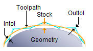
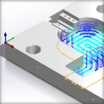

The following Cut Parameters tab allows you to define the cut parameters for the current 3 Axis operations listed below. You can set Global Parameters, Cut Pattern, Cut Direction and the Stepover Distance via this tab of the operation dialog. The Global Parameters section allows you to set the tolerance value to be used in machining. A uniform thickness or stock that needs to be left around the part can also be specified here. Refer to each option below.
Plunge Roughing, 3 Axis
Plunge Re-Roughing, 3 Axis
Parallel Finishing, 3 Axis
|
Dialog Box: Cut Parameters tab |
 Global Parameters, 3 Axis Operations The Global Parameters section allows you to set the tolerance value to be used in machining. Intol and Outol are allowable deviations (tolerances) from the actual part geometry plus the Stock layer (if any). A uniform thickness or stock that needs to be left around the part can be specified here.
Intol / Outol
Inward tolerance - the maximum thickness of material that can be removed from the Stock layer. Outward tolerance is the maximum thickness of material that can remain above the Stock layer.
 Tolerances play a vital role in both design engineering and digital manufacturing. In design, the goal is to allow the broadest tolerance range possible while meeting your design specifications. This is because, generally speaking, there is a direct correlation between tighter tolerances and higher manufacturing costs. Tolerances play a vital role in both design engineering and digital manufacturing. In design, the goal is to allow the broadest tolerance range possible while meeting your design specifications. This is because, generally speaking, there is a direct correlation between tighter tolerances and higher manufacturing costs.
Read the full article...
|
|
Stock
The thickness of the layer that will remain on top of the part after the toolpath is complete. Roughing operations generally leave a thin layer of stock, but for finishing operations this value is zero.
|
This section of the dialog provides cut control parameters:
•Cut Direction
The Cut Direction can be controlled by specifying either Climb (Down Cut), Conventional (Up Cut) or Mixed.
One of the basic concepts to understand in any milling operation is Cut Direction. It can be characterized by how the flutes of the cutting tool engage the stock material and form the chip that is removed during cutting. In many of MecSoft CAM’s 2½ & 3 Axis toolpath strategies you will see that Cut Direction is defined by selecting one of three options, Climb, Conventional or Mixed. Let’s take a look at the characteristics of each option.
Read the full article...
|
|
•Start Side
The Start Side can be specified as from Top or Bottom.
 Start at Bottom |
 Start at Top |
•Angle of Cuts
The Angle of Cuts can be specified as degrees (0-360).
•Cutting Area Control (Parallel Finishing Only)
These parameters control what areas of the part to cut. Select from the following:
|
 Stepover Control, 3 Axis Operations This allows you to define the spacing between the cuts. Select from the following options:
% Tool Diameter
Enter the stepover distance as a percentage value of the tool diameter.
Distance
Enter the exact stepover distance preferred.
Scallop
(not available for all operations)
Enter the scallop height to determine the spacing between cuts.
|